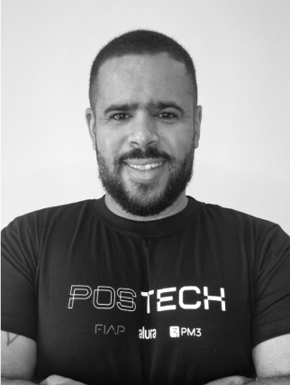
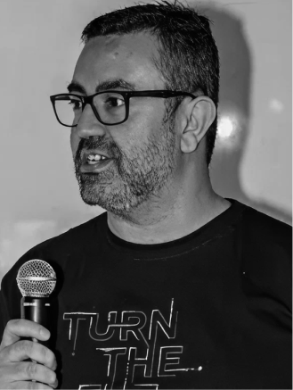

- Home
- Pós Tech
Sua pós em
produto e
tecnologia.Com certificado do MEC.
Três pós-graduações 100% digitais criadas pela PM3 com a FIAP: 10 meses, projeto real do primeiro ao último dia e certificado reconhecido pelo MEC.
Alunos e ex-alunos FIAP, Alura e PM3: 18x R$ 580
01 Pós-graduações
Escolha a
sua pós
As três têm a mesma estrutura: 10 meses, 360 horas, projeto prático e certificado reconhecido pelo MEC. Escolha pelo momento da sua carreira.
Digital Product Management
Desenvolva estratégias para gerenciar todas as fases do ciclo de vida de um produto digital, da concepção ao go-to-market.
- 10 meses · 360h
- Certificado MEC
IA para Negócios
Desenvolva uma visão integrada de negócios, impulsione sua gestão e performance e entenda como a IA pode potencializar os negócios.
- 10 meses · 360h
- Certificado MEC
Tech Management
Uma jornada completa para impulsionar sua carreira como Tech Lead, gerando mais valor para os negócios.
- 10 meses · 360h
- Certificado MEC
02 Como funciona
Saia com um case
para o seu portfólio
Em 5 fases, você constrói um projeto real que vira portfólio. Cada fase concluída já vale uma micro-certificação para mostrar ao mercado, antes mesmo do fim do curso.
Aula inaugural
Encontro ao vivo com coordenação e professores, primeiras disciplinas e a primeira entrega do Tech Challenge.
Micro-certificaçãoNovos desafios
Um novo grupo de disciplinas, atividades práticas e o segundo estágio do projeto.
Micro-certificaçãoProjeto ganha forma
Mais disciplinas e a terceira entrega do Tech Challenge, com suporte no Discord.
Micro-certificaçãoMais complexidade
Desafios cada vez mais complexos e a quarta entrega do projeto.
Micro-certificaçãoEntrega final
Última entrega do Tech Challenge, Hackathon Experience e a atividade individual presencial.
Certificado FIAP · MECDo primeiro ao último mês
- Tech ChallengeO projeto principal, com uma entrega ao fim de cada fase
- Aula inaugural ao vivoPara conhecer coordenação, professores e turma
- Hackathon ExperienceUm dia inteiro para aplicar tudo o que aprendeu
- Dois especialistas por aulaAulas assíncronas, no seu ritmo, com vídeo e prática
- Lives com professoresEncontros ao vivo, opcionais, durante as fases
- Portfólio realUm case completo para mostrar no mercado
O maior grupo de educação em tech, business e IA do Brasil.
A Pós Tech nasce de um ecossistema que já impactou mais de 6 milhões de pessoas e treinou mais de 3.000 empresas em IA.
04 Incluso na matrícula
Benefícios
da matrícula
A partir da matrícula, você já começa a estudar e entra na comunidade da Pós Tech.
PM3 Sprints
Acesso completo a mais de 30 cursos da plataforma PM3 Sprints desde a matrícula.
Comunidade no Discord
Professores, especialistas e community managers para discutir projetos e tirar dúvidas o tempo todo.
Warm-up
Antes da aula inaugural, uma trilha de cursos PM3 Sprints e Alura para chegar aquecido.
Unidades e polos
Estude online e conte com unidades FIAP em São Paulo e polos no Rio, em Porto Alegre, Belo Horizonte e Recife.
Extensões internacionais
Ao terminar a pós, amplie os estudos com parceiros internacionais em transformação digital e empreendedorismo.
05 Coordenação
Quem conduz
a pós
Coordenação da FIAP e professores que lideram produto em empresas como Oracle e Portobello. Na pós de Digital Product Management:


06 Investimento
Condições
de matrícula
Processo seletivo 100% digital. À vista ou em até 18x, com o mesmo valor para as três pós. Inscrições até 28/10, início das aulas em 29/10.
Alumni FIAP, Alura e PM3
20% de desconto para alunos e ex-alunos. O desconto entra automático na matrícula.
Inscreva-se como alumniEmpresas parceiras
Colaboradores de empresas parceiras da FIAP também têm 20% de desconto.
PM3 para empresas07 Dúvidas
Perguntas
frequentes
Fale com o time da Pós Tech pelo WhatsApp ou pelo e-mail contato@pm3.com.br.
Falar no WhatsAppA Pós Tech é reconhecida pelo MEC?
Sim. A Pós Tech é uma pós-graduação da FIAP, criada com a PM3, com certificado reconhecido pelo MEC.
Quem pode fazer a Pós Tech?
Pessoas com formação superior completa realizada no Brasil, com colação de grau em curso tecnólogo, bacharelado ou licenciatura. Cursos de formação específica ou sequenciais não habilitam para o ingresso.
Quanto tempo dura?
10 meses e 360 horas de conteúdo, com encontros ao vivo com os professores.
Qual a modalidade?
Aulas 100% digitais, assíncronas e hands-on, com lives opcionais e suporte no Discord. Ao final, há uma única atividade individual presencial, agendada por você em uma unidade ou polo da FIAP (São Paulo, Rio, Porto Alegre, Belo Horizonte ou Recife).
Sou aluno da PM3. Tenho desconto?
Sim. Alunos e ex-alunos da PM3, da FIAP e da Alura têm 20% de desconto: 18x de R$ 580. Basta usar na matrícula o mesmo e-mail da plataforma PM3; o desconto aparece automaticamente.
Tem TCC? Como sou avaliado?
Não há TCC. A avaliação é feita pelo Tech Challenge (uma entrega ao final de cada fase), pelo Hackathon Experience e por uma atividade individual presencial no fim do curso. O certificado é emitido pela FIAP, Centro Universitário com nota máxima no MEC.
Qual a diferença para as formações e a Membership?
As formações são cursos livres, no seu ritmo, e fazem parte da Membership. A Pós Tech é uma pós-graduação de 10 meses com certificado reconhecido pelo MEC, turmas e projeto em 5 fases. Tem matrícula e valor próprios e não está incluída na Membership.
08 Certificação
Pós-graduação
reconhecida
pelo MEC.
Ao concluir, você recebe o certificado de pós-graduação lato sensu da FIAP, reconhecido pelo MEC, e um portfólio com o projeto que desenvolveu nos 10 meses.
- Top 5Empresas mais admiradas em Produto no Brasil
- Nota 5FIAP com nota máxima nas avaliações do MEC
- 9 em 10Alunos mais confiantes após o curso
O mercado de Produto em 2026
Uma carreira em alta,do primeiro cargo à liderança.
Fonte: Panorama do Mercado de Produto 2026, pesquisa da PM3 com mais de 2.300 profissionais.